السلسلة 12
الشاحنة (صنف C) · 20 سؤال. كل سؤال فيه الصورة والصوت. اختار الجواب (ولا جوج إلا كانو صحاح)، ورك على «تأكيد» باش تشوف واش صبتي.
- 20سؤال
- 16باش تنجح
- 1 – 4جواب واحد ولا أكثر
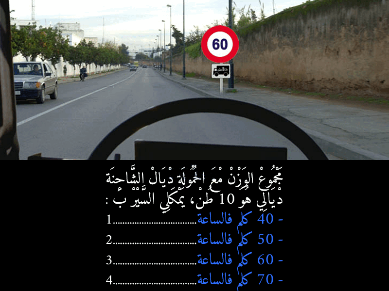
الكلافيي: 1–4 للجواب، Enter للتأكيد وللسؤال الجاي.
السلسلة 12 · النتيجة ديالك
0 / 20
السلسلة 12
الشاحنة (صنف C) · 20 سؤال، بالصوت، مع الجواب الصحيح والشرح.
السؤال 1
بيّن الجواب
الجواب الصحيح: 1 و 2 و 3
هذه العلامة الطرقية تعني أن جميع العربات (وخاصة الشاحنات) اللي الوزن ديالها مع الحمولة كيتجاوز 3,5 طن، خاصها ما تسيرش بسرعة أكثر من 60 كلم فالساعة. بما أن الشاحنة ديالي مجموع الوزن ديالها مع الحمولة هو 10 طن، خاصني نمشي بسرعة لا تتعدى 60 كلم فالساعة. يعني ممكن نسوق بـ 40 أو 50 أو 60، ولكن ممنوع نتجاوز 60. إذن الجواب الصحيح هو رقم 1، 2 و 3.
السؤال 2
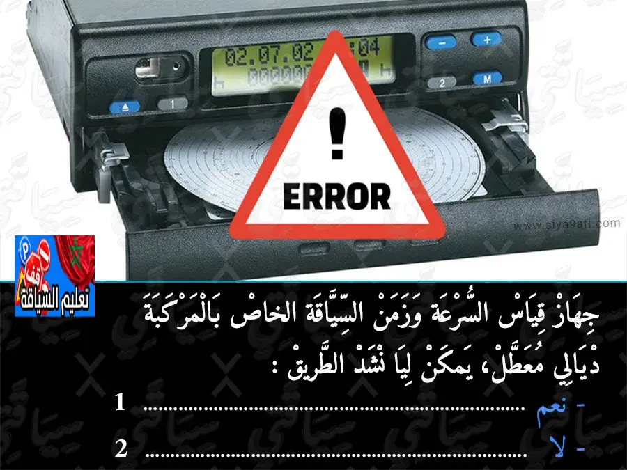
بيّن الجواب
الجواب الصحيح: 2
إذا كان جهاز قياس السرعة وزمن السياقة (تاكوغراف) الخاص بالشاحنة أو الحافلة معطّل، مايمكنش ليك تشد الطريق حتى تصلح الجهاز. هذا الجهاز ضروري لمراقبة احترام السرعة ووقت السياقة والراحة. إذا مشيت والجهاز معطل، كتكون مخالف للقانون وكتعرض لمخالفة مرورية. الجواب الصحيح هو رقم 2.
السؤال 3
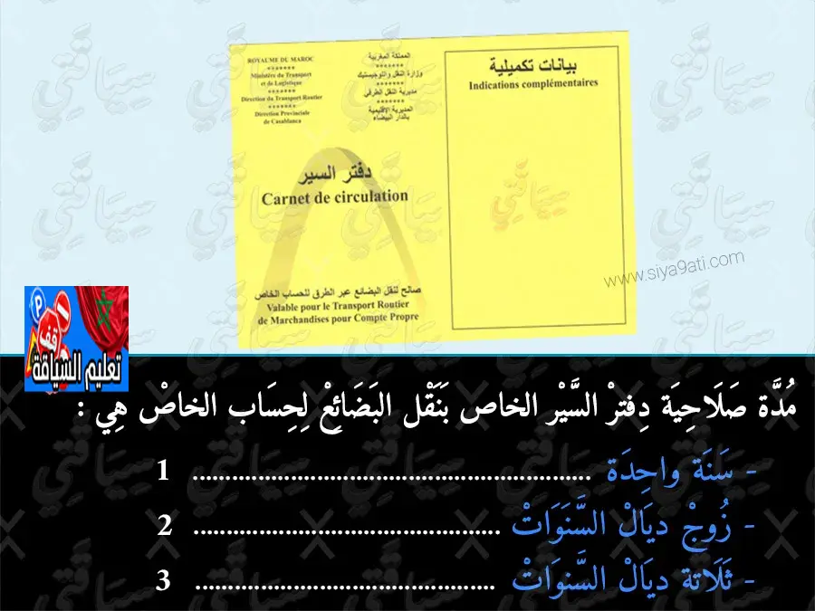
بيّن الجواب
الجواب الصحيح: 1
مدة صلاحية دفتر السير الخاص بنقل البضائع لحسابك الخاص في المغرب هي سنة واحدة فقط. يعني كل عام خاصك تجدد الدفتر، وإلا غادي تكون مخالف للقانون وتعرض لعقوبات. الجواب الصحيح هو رقم 1.
السؤال 4
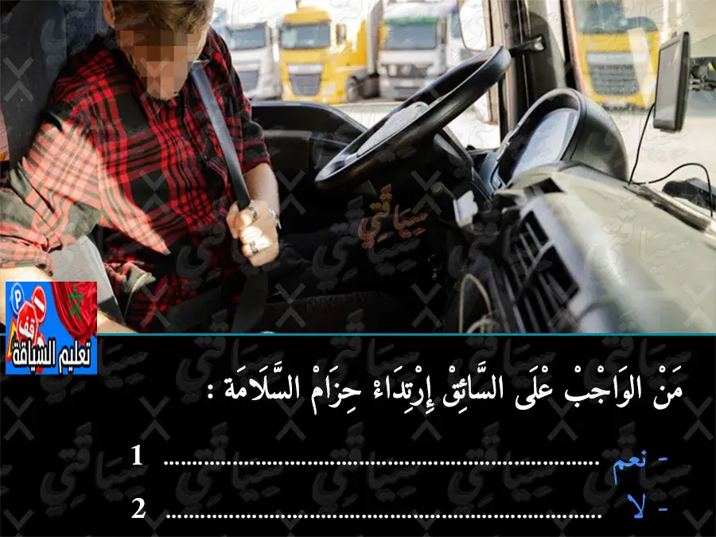
بيّن الجواب
الجواب الصحيح: 1
من الواجب على كل سائق يلبس حزام السلامة أثناء السياقة، سواء داخل المدينة أو خارجها. عدم احترام إجبارية استعمال حزام السلامة يُعتبر مخالفة من الدرجة الثانية حسب مدونة السير المغربية، ويعاقب مرتكبها بغرامة مالية تتراوح بين 500 و1000 درهم، بالإضافة إلى خصم نقطة واحدة من رصيد رخصة السياقة. احترام هاد القانون ضروري لحماية حياتك وحياة الركاب وتفادي العقوبات.
السؤال 5
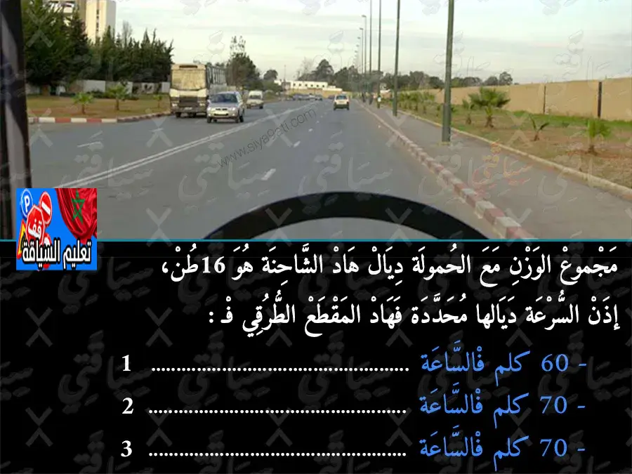
بيّن الجواب
الجواب الصحيح: 1
بالنسبة للشاحنات اللي الوزن الإجمالي المأذون به محملة أو الوزن الإجمالي الدارج المأذون به بين 12 طن و19 طن، السرعة القصوى المسموح بها داخل التجمعات العمرانية (المدن) هي 60 كلم في الساعة. هذا يعني أن الشاحنة اللي الوزن ديالها مع الحمولة هو 16 طن خاصها تسير بسرعة لا تتجاوز 60 كلم في الساعة داخل المدينة. هاد القانون كيتطبق على جميع الشاحنات الثقيلة باش تضمن السلامة ديال مستعملي الطريق. الجواب الصحيح هو رقم 1.
السؤال 6
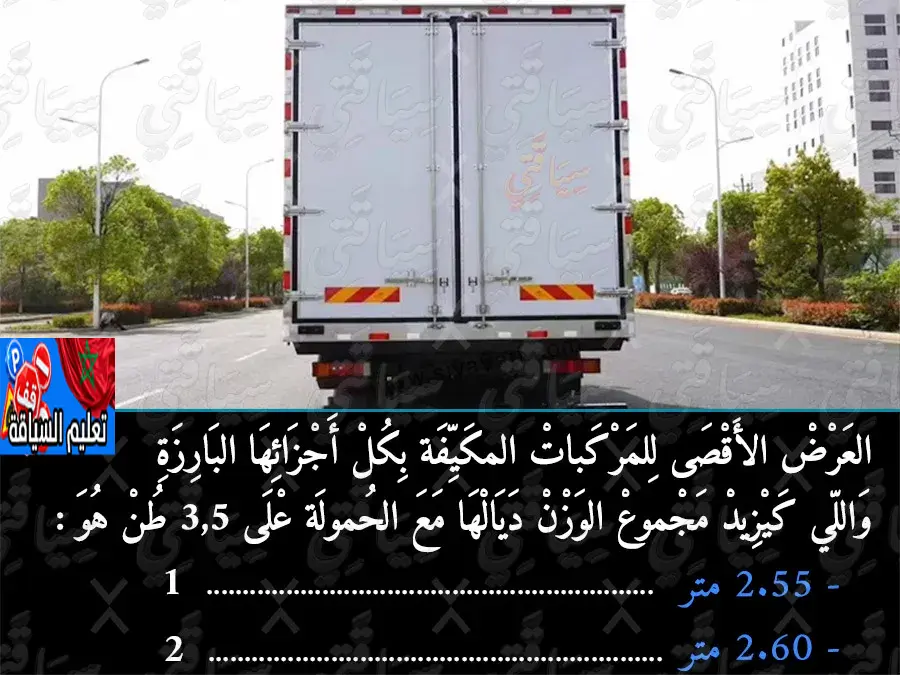
بيّن الجواب
الجواب الصحيح: 2
العرض الأقصى المسموح به للشاحنات اللي الوزن ديالها مع الحمولة أكثر من 3,5 طن هو 2,55 متر. ولكن إذا كانت الشاحنة مبردة (مثلاً لنقل الأسماك أو المواد اللي خاصها تبريد)، فالعرض الأقصى كيرتفع لـ 2,60 متر. يعني إذا عندك شاحنة مبردة، ممكن العرض يوصل حتى 2,60 متر بشرط ما يتجاوزش هاد الحد القانوني. الجواب الصحيح هو رقم 2.
السؤال 7
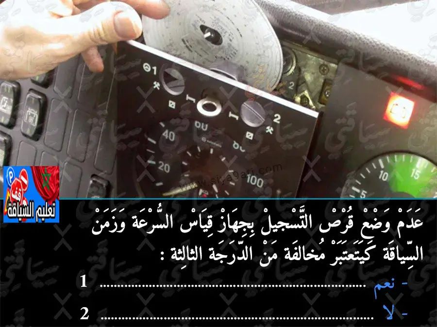
بيّن الجواب
الجواب الصحيح: 2
إذا لم تضع ورقة التسجيل في جهاز قياس السرعة وزمن السياقة (تاكوغراف)، فهذا يعتبر مخالفة خطيرة من الدرجة الأولى حسب مدونة السير المغربية، وتؤدي إلى غرامة مالية كبيرة وقد تترتب عنها عقوبات أخرى. هذا الإجراء ضروري باش السلطات تراقب احترامك للراحة والسرعة القانونية. إذن الجواب الصحيح هو رقم 2: مخالفة من الدرجة الأولى وليس الثالثة.
السؤال 8
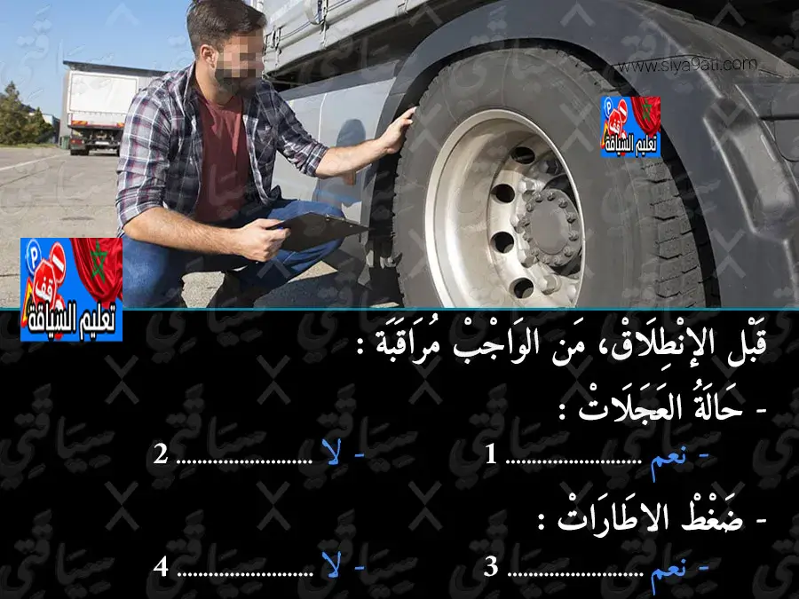
بيّن الجواب
الجواب الصحيح: 1 و 3
قبل الانطلاق بالشاحنة، من الواجب على السائق يراقب حالة العجلات وضغط الإطارات. هاد الشي ضروري أكثر بالنسبة للشاحنات، حيث الوزن الكبير كيأثر بزاف على العجلات، وإذا كان فيهم مشكل أو الضغط ناقص ممكن يوقع انفجار أو فقدان السيطرة على الشاحنة. لهذا، خاص السائق يفحص العجلات (يشوف واش فيهم تشققات أو تاكل) ويفحص الضغط ديال الإطارات قبل كل رحلة باش يضمن السلامة ديالو وسلامة الناس فالطريق. خلاصة: قبل الانطلاق بالشاحنة، ضروري تراقب حالة العجلات وضغط الإطارات. هادشي إجراء قانوني وكيحميك من المخاطر. الجواب الصحيح هو رقم 1 و 3.
السؤال 9
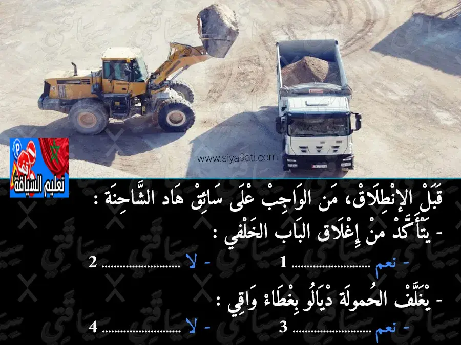
بيّن الجواب
الجواب الصحيح: 1 و 3
قبل الانطلاق بالشاحنة، من الواجب على السائق يتأكد من إغلاق الباب الخلفي مزيان باش ما تطيحش الحمولة فالطريق وتسبب خطر على باقي مستعملي الطريق. وأيضاً خاص السائق يغطي الحمولة ديالو بغطاء واقي (tapis أو bâche)، خصوصاً إذا كانت الحمولة رمل أو تراب أو مواد خفيفة، باش ما تتبعثرش فالطريق أو تتطاير وتسبب حوادث أو تلوث الطريق. خلاصة: السائق خاصو يدير هاد الإجراءات كاملة قبل ما ينطلق، هكاك كيحمي راسو وكيحترم القانون. الجواب الصحيح هو رقم 1 و 3.
السؤال 10
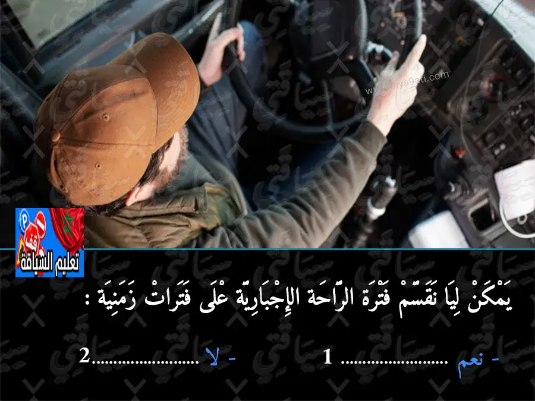
بيّن الجواب
الجواب الصحيح: 1
حسب مدونة السير المغربية، بعد كل 4 ساعات ونصف (4 س و 30 د) من السياقة المستمرة، خاص السائق يدير راحة إجبارية مدتها 45 دقيقة. ولكن القانون كيسمح للسائق أنه يقسم هاد الراحة على فترات قصيرة، بشرط كل فترة تكون على الأقل 15 دقيقة. أمثلة عملية: ممكن تاخذ راحة وحدة متواصلة 45 دقيقة. أو تقسّمها إلى راحة 15 دقيقة، ثم راحة 30 دقيقة. أو تقسّمها إلى 3 فترات: مثلاً 15 دقيقة + 15 دقيقة + 15 دقيقة. المهم المجموع يكون 45 دقيقة على الأقل، وكل توقف ما يقلش عن 15 دقيقة. خلاصة بالدارجة: القانون كيخليك تقسّم الراحة الإجبارية بعد 4 سوايع ونص ديال السياقة. تقدر ترتاح 15 دقيقة ثم تكمل، أو ترتاح 30 دقيقة من بعد، المهم يكونو هاد الوقفات مجموعين على الأقل 45 دقيقة. الجواب الصحيح هو رقم 1.
السؤال 11
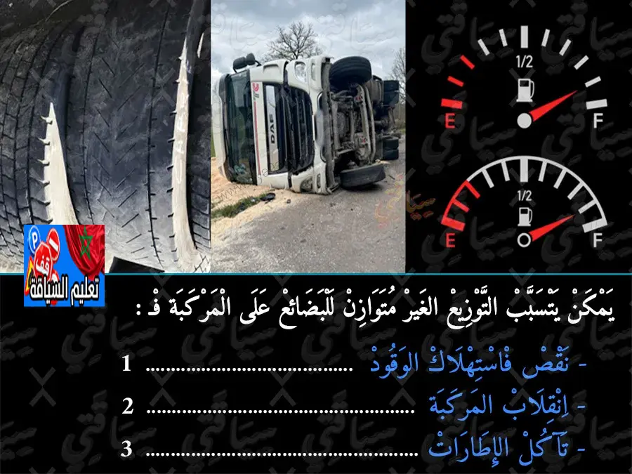
بيّن الجواب
الجواب الصحيح: 2 و 3
إذا كانت البضاعة موزعة بشكل غير متوازن في الشاحنة أو السيارة، هاد الشي كيسبب مشاكل خطيرة بحال: انقلاب المركبة: الوزن الزائد في جهة وحدة يمكن يخل التوازن ويخلي المركبة تقلب بسهولة خصوصاً فالمنعرجات أو عند الفرملة المفاجئة. تآكل الإطارات: الإطارات اللي تحت الحمل الكبير غادي يتاكلو بسرعة ويفقدو الفعالية ديالهم، وهكذا كتولي معرض للحوادث. أما الاقتصاد في الوقود (الجواب 1)، فكتعلق أكثر بالوزن الإجمالي والسياقة. إذن إلى ماتمش التوزيع الجيّد للبضاعة، الشاحنة ديالك تقدر تقلب وتآكل العجلات. خاصك دائما توزع الحمولة بالتساوي. الجواب الصحيح هو رقم 2 و 3.
السؤال 12
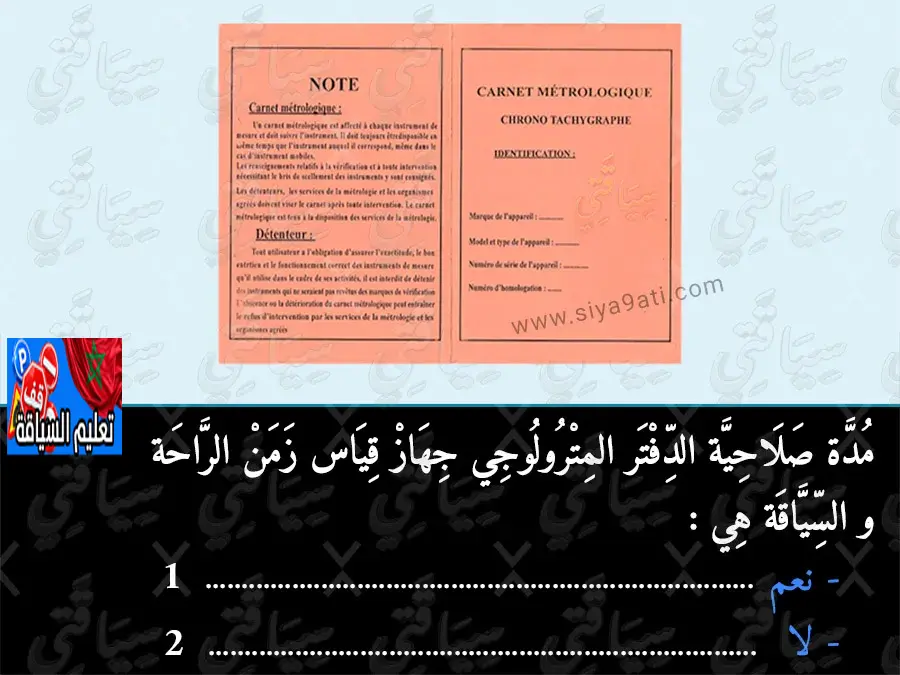
بيّن الجواب
الجواب الصحيح: 2
مدة صلاحية الدفتر المتـرولوجي الخاص بجهاز قياس زمن الراحة والسياقة (التاكوغراف) هي سنتان، يعني خاصك تدير المراقبة والتجديد كل عامين باش الجهاز يبقى قانوني وصالح للاستعمال، وكتفادى المشاكل مع المراقبة الطرقية. الجواب الصحيح هو رقم 2.
السؤال 13
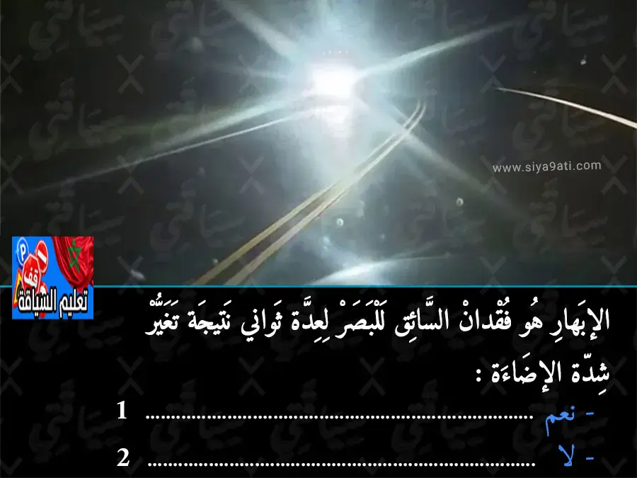
بيّن الجواب
الجواب الصحيح: 1
الإبهار هو فقدان مؤقت للبصر كيوقع للسائق بسبب التغيير المفاجئ في شدة الإضاءة (مثلاً: من ظلام لنور قوي أو من نور لنور قوي بزاف). هاد الظاهرة خطيرة بزاف، حيت كتحرم السائق من الرؤية لثواني، وهادشي كيزيد من احتمال وقوع الحوادث. الجواب الصحيح هو رقم 1.
السؤال 14
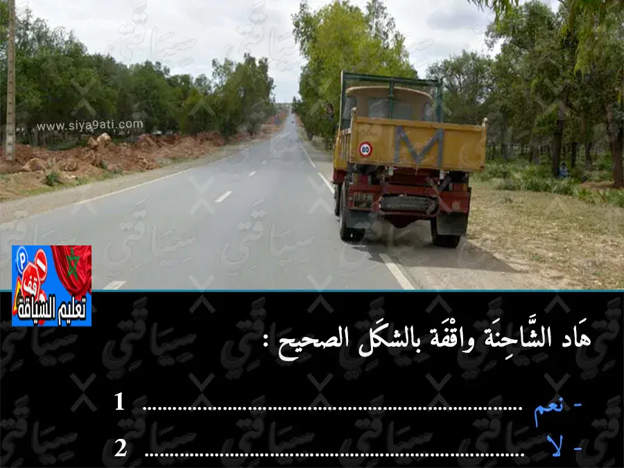
بيّن الجواب
الجواب الصحيح: 2
هذه الشاحنة ماشي واقفة بالشكل الصحيح، حيث خاص الشاحنة توقف كاملة خارج قارعة الطريق (خارج المقطع المخصص للسير)، وما تكونش جزء منها فوق الطريق باش ما تعرقلش السير أو تشكل خطر على باقي مستعملي الطريق. الوقوف الصحيح هو تكون الشاحنة كلها على جانب الطريق، وما تبقاش كتعرقل الممر ديال السيارات. الجواب الصحيح هو رقم 2.
السؤال 15
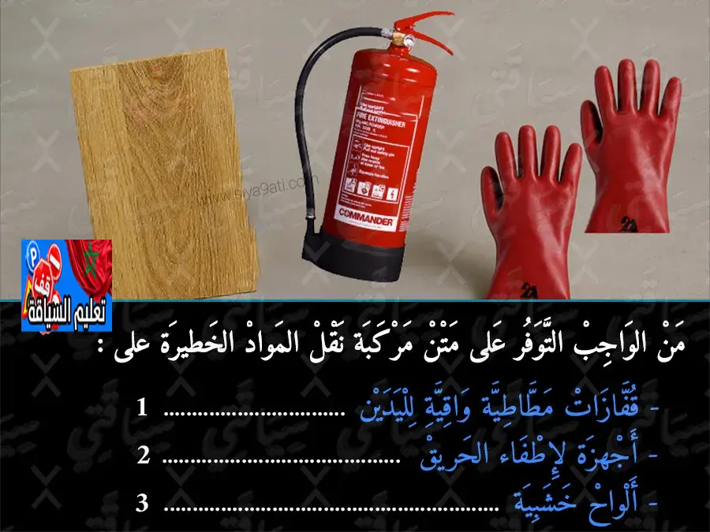
بيّن الجواب
الجواب الصحيح: 1 و 2
من الواجب قانونياً وكلّياً أن كل مركبة كتقوم بنقل المواد الخطيرة تكون مجهزة بقفازات مطاطية واقية (باش تحمي السائق من أي تلامس مع المواد الخطيرة) وأيضاً أجهزة لإطفاء الحريق (باش يتدخّل بسرعة إذا وقع أي حريق لا قدر الله). أما الألواح الخشبية (الجواب 3) فهي غير ضرورية ولا علاقة لها بنقل المواد الخطيرة. الجواب الصحيح هو رقم 1 و 2.
السؤال 16
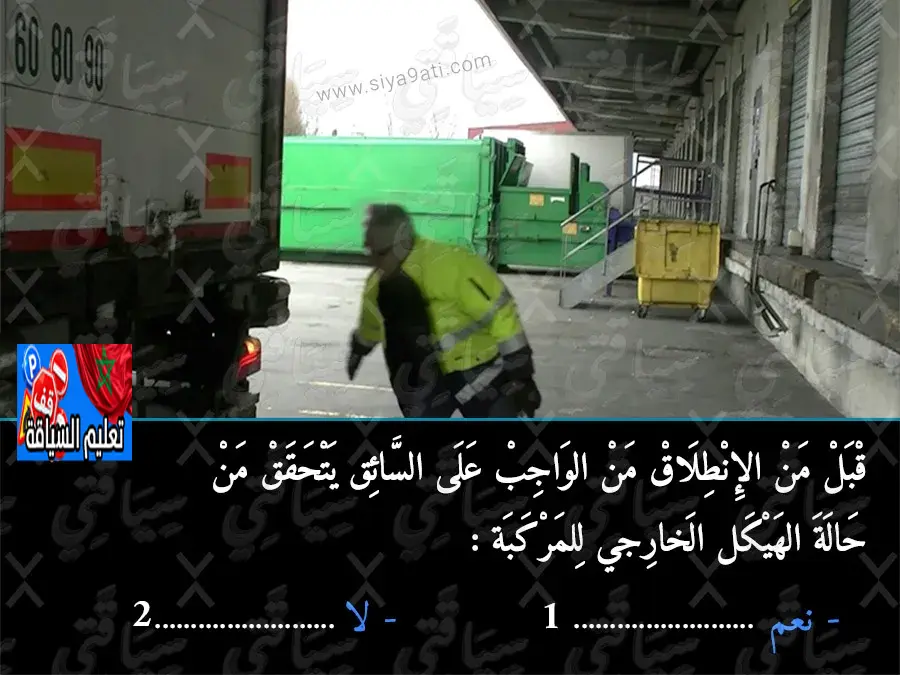
بيّن الجواب
الجواب الصحيح: 1
قبل ما تبدا السير، من الواجب على السائق أنه يدير دورة تفقدية سريعة للهيكل الخارجي للمركبة ويتأكد من الحالة ديالو (مثلاً: ما يكونش فيه تصدعات أو قطع مكسورة أو إنارة أو أضواء خارج الخدمة...). هادشي كيعاون السائق يكتشف أي مشكل ممكن يشكل خطر أثناء السير، وكيخليه ملتزم بالقانون والسلامة. 💡خلاصة: قبل ما تخرج بالشاحنة، خاصك تشوف بعينك واش كلشي مزيان فالشكل الخارجي ديالها، باش تحمي راسك وتحمي الناس فلطريق. الجواب الصحيح هو رقم 1.
السؤال 17
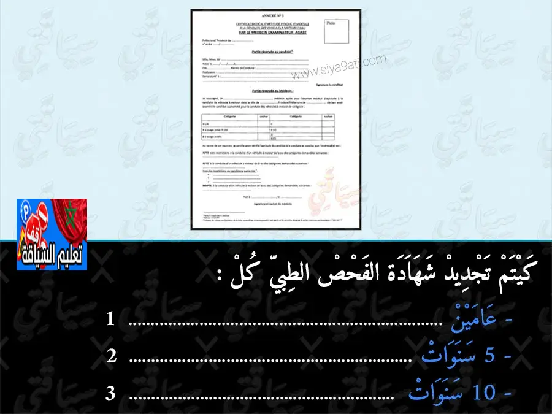
بيّن الجواب
الجواب الصحيح: 1
شهادة الفحص الطبي الخاص بالسياقة، خاصك تجدّدها كل عامين (كل سنتين). هذا القانون كيهم جميع السائقين ديال الوزن الثقيل (شاحنات، حافلات...)، وكيضمن أن السائق يكون دائما بصحة جيدة ومؤهل للسياقة. الجواب الصحيح هو رقم 1.
السؤال 18
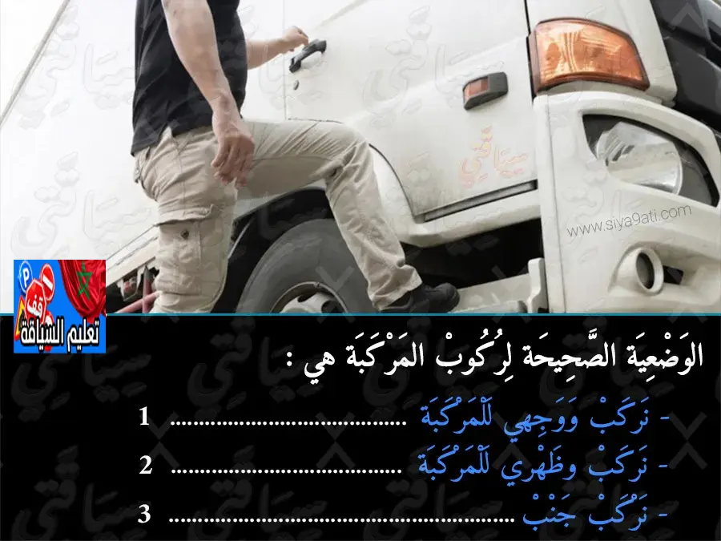
بيّن الجواب
الجواب الصحيح: 1
الوضعية الصحيحة والآمنة باش تركب فالمركبة هي تكون واقف ووجهك مواجه للمركبة، وتشد بيديك جيّداً، خصوصاً في الشاحنات أو المركبات المرتفعة. هذا كيحميك من السقوط أو الإصابة في حالة زلقت رجلك، وكيخليك متحكم في الحركة ديالك وأنت كتركب. الجواب الصحيح هو رقم 1.
السؤال 19
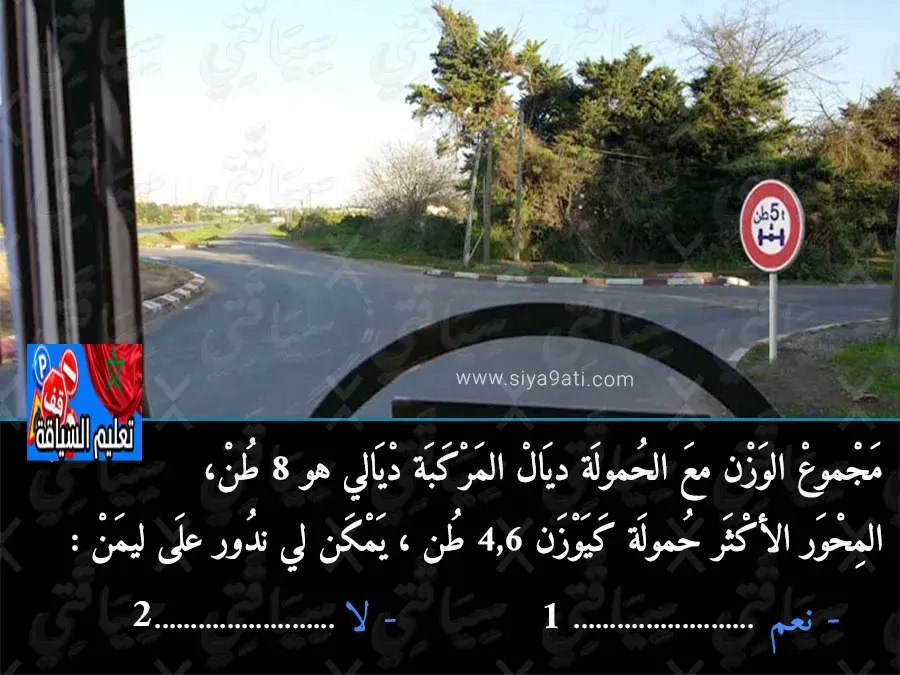
بيّن الجواب
الجواب الصحيح: 1
في الصورة، العلامة الطرقيّة الدائرية الحمراء كتعني (ممنوع مرور المركبات التي تتجاوز الحمولة على المحور المحددة في العلامة)، وهنا مكتوب 5 طن على المحور. السؤال: مجموع الوزن مع الحمولة ديال المركبة هو 8 طن، والمحور الأكثر حمولة كيوزن 4.6 طن. الشرح: العلامة كتشير فقط للوزن الأقصى المسموح به لكل محور (axe)، وماشي للوزن الإجمالي ديال المركبة. القانون كيعتمد على الوزن اللي واقع فوق كل محور (عادة العجلات الأمامية أو الخلفية). هنا، الوزن اللي فوق المحور هو 4.6 طن، وهو أقل من 5 طن المسموح به، إذن يمكن ليك تدوز من هاد الطريق وتدور على اليمين، حيث انت ما تجاوزتيش الحد اللي مكتوب فالعلامة. الجواب الصحيح هو رقم 1.
السؤال 20
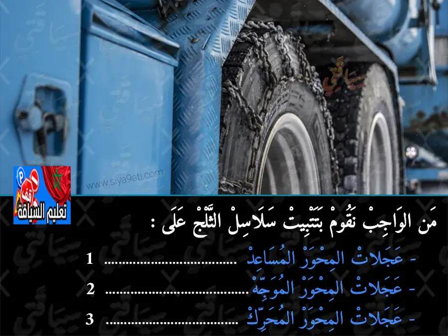
بيّن الجواب
الجواب الصحيح: 3
في الشاحنات، كاينين عدة محاور (مقدّمة، وسط، مؤخرة)، لكن اللي مهم هو (المحور المحرّك) أي العجلات اللي كتوصّل ليهم القوة من المحرك وكيحركو الشاحنة للأمام. هاد المحور غالباً كيكون في الوسط أو المؤخرة (على حسب نوع الشاحنة). إذا كان الشاحنة عندها محورين محرّكين، خاص تتركب السلاسل على الأقل فواحد منهم (أفضل يكونو بجوج). لماذا على المحور المحرك؟ لأن السلاسل كتساعد العجلات المحركة ما تزلقش فالجليد وتبقى الشاحنة متحكمة فيها وماتغرزش. الجواب الصحيح هو رقم 3.